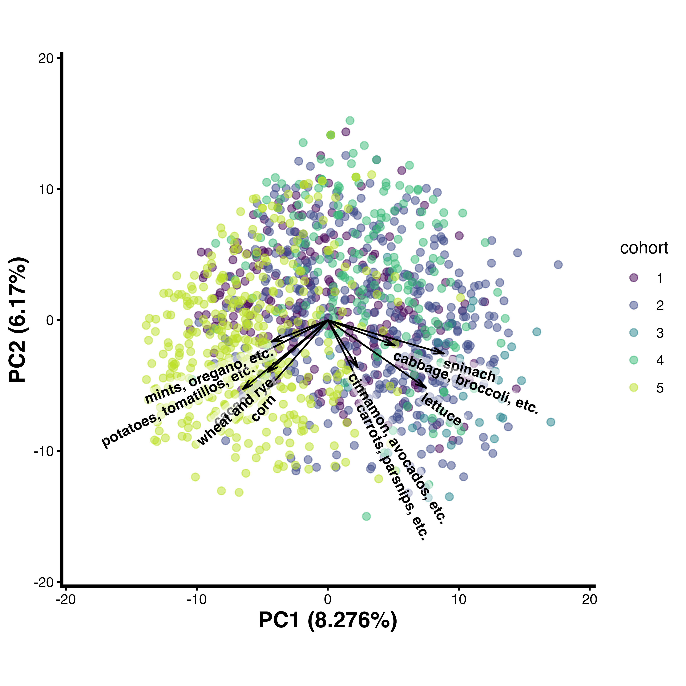

Creating a PCA Plot
This page will instruct you in the creation of a principal component analysis (PCA) plot using the custom pca_plot() function and to provide background on the purpose and interpretation of PCA plots. These steps are intended to follow the calculation of relative abundance.
What is a PCA Plot?
A PCA plot is a graphical representation of Principal Component Analysis (PCA), a technique used to reduce the dimensionality of complex datasets while preserving as much variability (or information) as possible.
In many datasets, you might have a large number of variables (features). PCA helps simplify such datasets by transforming them into a smaller set of uncorrelated variables called principal components (PCs). These PCs capture the maximum variation in the data, with each successive PC accounting for progressively less of the remaining variability.
For FoodSeq data the variables are the food taxa detected in each sample, so a phyloseq containing many food taxa can be summarized in a plot with two axes. Each point is one sample, and samples that sit close together tend to have more similar food profiles than samples that sit far apart. Because each PC is a weighted combination of many foods rather than a single measurement, the values along the axes are not directly interpretable on their own. What the axis labels do tell you is the percentage of the total variation that each component accounts for.
pca_plot() produces a biplot, which layers a second kind of information onto the same axes: arrows drawn from the origin, each representing one food taxon. These arrows are the loadings. The direction of an arrow shows how that food relates to the two components being plotted, and its length shows how strongly the food contributes to them, so together the arrows show which foods drive the spread you see in the points. Not every taxon gets an arrow. The function ranks all taxa by arrow length and draws only the top nTaxa, so setting nTaxa = 10 shows the ten taxa with the strongest influence on those two components. The rest are left off to keep the plot readable.
Input
Before creating a PCA plot, you must have a CLR-transformed, foods-only phyloseq — see Relative Abundance and CLR Transform for how to compute ps.filt.clr. That object is what feeds into pca_plot() below.
pca_plot() Function
pca_plot() is part of the foodseq.tools package. Install it if you haven't already, then load it:
# install.packages("devtools")
devtools::install_github("LAD-LAB/foodseq.tools")
library(foodseq.tools)
Run:
at minimum to plot a PCA. The inputs of the function are:
ps(required) — your CLR-transformed, filtered phyloseqcolorVar(optional) — the variable from your sample metadata to color the samples by; by defaultNULL(no color grouping)colorName(optional) — a legend title corresponding tocolorVar; by defaultNULLnTaxa(optional) — the number of taxa to display loadings for; by default10customColors(optional) — a named vector of colors, one per unique value ofcolorVar; by defaultNULLcustomGradient(optional) — a data frame oflow/mid/highcolors, for a continuous color gradient whencolorVaris numeric rather than categorical; by defaultNULLmid(optional) — forcustomGradient, how to compute the gradient's midpoint —"middle"(mean of the range),"median", or"mean"; by default"mean"xPC/yPC(optional) — the principal components for the x-/y-axes; by default1/2ellipse(optional) — whether to add centroid ellipses to your plot; by defaultFALSEbplab(optional) — the name of a tax-table column to use for biplot arrow labels; by defaultNULL(falls back to each ASV's lowest assigned taxonomic rank)
Internally, pca_plot() relies on one helper function: .pca_biplot_layer(), which takes a fitted PCA's rotation/eigenvalues and a base scatter plot and draws the top-nTaxa loading arrows and their quadrant-aware text labels. It's factored out this way because project_pca() needs the exact same drawing logic when projecting new data into an existing PCA's biplot — both functions call it identically.
It works as follows. First, it normalizes the phyloseq's orientation to samples-as-rows, since prcomp() is run directly on the OTU table and everything downstream assumes that layout — without this, a taxa-as-rows phyloseq (an equally common convention) would silently produce a transposed, nonsensical PCA:
if (phyloseq::taxa_are_rows(ps)) {
otu_samples_rows <- t(methods::as(phyloseq::otu_table(ps), "matrix"))
phyloseq::otu_table(ps) <- phyloseq::otu_table(otu_samples_rows, taxa_are_rows = FALSE)
}
It then renames a name column in your sample data if one exists (to avoid colliding with a name column the function adds later), and — if bplab is set — relocates that tax-table column to the end, so it's the one used for biplot labels.
With the phyloseq prepared, it runs prcomp() and builds a scree table (per-PC eigenvalues, variance explained, and cumulative variance) and a matching scree plot:
pca <- stats::prcomp(ps@otu_table, center = TRUE, scale = FALSE)
scree.table <- data.frame(
PC = paste0("PC", seq_along(varExplained)),
Eigenvalue = eigs,
VarianceExplained = varExplained,
CumulativeVariance = cumsum(varExplained)
)
Next, it builds the base scatter plot — coloring by colorVar if one was given, otherwise leaving points uncolored — and layers on a custom color scale or gradient and centroid ellipses if requested. It then calculates loadings for every taxon, keeps only the top nTaxa by vector length, and resolves each one's label to its lowest assigned taxonomic rank:
V <- pca$rotation # Eigenvectors
L <- diag(pca$sdev) # Diagonal matrix with square roots of eigenvalues
loadings <- V %*% L
loadings.plot <- dplyr::top_n(loadings.xy, nTaxa, wt = length)
Finally, it determines which quadrant each label falls into (so labels sit outside their arrow rather than overlapping it) and adds an arrow plus text label for each taxon, building the finished biplot on top of the base scatter plot from before, via .pca_biplot_layer().
Understanding the Output
pca_plot() returns a named list with six elements:
pca.df— your sample data with all PCs added as columns; the PCA scores, useful for plotting sample separation in PCA space colored by any metadata fieldpca.biplot— the finished PCA biplotloadings— a matrix of loadings in PCA space, one row per ASV and one column per principal component; the sign indicates the relationship with that PC and the absolute value indicates the strength of contributionpca.output— the rawprcomp()object (standard deviations, rotation matrix, centering/scaling, and scores), for anyone who needs lower-level access thanpca.df/loadingsprovidescree.table— a table with one row per PC, giving its eigenvalue, percent variance explained, and cumulative variance explained; useful for deciding how many PCs are worth interpretingscree.plot— a scree plot (variance explained vs. PC number) built fromscree.table
loadings should look like this:
$pca.df
$pca.biplot
$loadings
PC1 PC2 PC3
ATCCTTCTTTCCGAAAACAAAATAAAAGTTCAGAAAGTTAAAATAAAAAAGG -0.945388925 0.5892904525 -0.0973427943
ATCCTTATTTTGAGAAAACAAAGGTTTATAAAACTAGAATTTAAAAG 0.098959450 -3.8495772105 0.7049946079
ATCCGTGTTTTGAGAAAACAAGGGGTTCTCGAACTAGAATACAAAGGAAAAG 1.228102502 -1.5218304409 -0.1646736346
ATCCGTGTTTTGAGAGGGGGGTTCTCGAACTAGAATACAAAGGAAAAG 2.535100338 0.2163598635 -1.3204555799
ATCCTGGGTTACGCGAACAAAACAGAGTTTAGAAAGCGG 1.782297628 0.7683108632 3.2098321172
ATCCTGTTTTCAGAAAACAAGGGTTCAGAAAGCGAGAACCAAAAAAAGGATAG 0.618113591 0.0999320340 -0.5458098584
ATCCATGTTTTGAGAAAACAAGCGGTTCTCGAACTAGAACCCAAAGGAAAAG 0.616755384 -0.7076333908 -0.9999314334
Each row is an ASV and each column is a principal component. loadings represents the degree to which each ASV contributes to each principal component, where the sign indicates the relationship with the PC and the absolute value indicates the strength of contribution. You can use loadings to identify which variables drive separation the most.
pca.df should look like this:
| name | PC1 | PC2 | PC3 | PC4 | PC5 | PC6 |
|---|---|---|---|---|---|---|
| 3-B11 | -8.0250433 | -1.0884380 | 0.6269016 | 1.92399773 | -3.8568241 | 0.0976452 |
| 3-D11 | -7.9289715 | 8.0726668 | -1.6161495 | 1.46896403 | -0.1878901 | -0.3016497 |
| 3-F11 | -10.0973405 | 6.8490332 | -1.1455442 | 1.96876274 | -1.9607628 | 1.3939926 |
| 3-G11 | -11.2714679 | 9.4835516 | -1.4488316 | 2.28493958 | -1.4831855 | 1.4202594 |
| 4-A01 | 5.9251184 | -5.0456726 | -3.6501921 | 5.07511353 | -2.2493445 | -2.9363608 |
| 4-A02 | -4.1142239 | -7.6482507 | 0.1921778 | 3.06642220 | -1.1873046 | -2.5132890 |
| 4-A03 | 1.2596879 | -2.3772487 | 4.0742153 | 0.15822156 | -6.4265191 | 1.8207811 |
| 4-A04 | 4.7598974 | -3.4523810 | -4.5502059 | -2.54135272 | 1.9651763 | 8.6794485 |
| 4-A05 | -3.6920555 | -3.4102144 | -1.5141453 | -0.38240620 | -6.2446326 | 0.8044125 |
| 4-A06 | -0.1208256 | -5.7453982 | -6.2540801 | -4.07782675 | -0.8463138 | 7.7707162 |
Each row is a sample and each column is a principal component or a metadata field. pca.df represents the PCA scores for each sample, which allows for plotting sample separation in PCA space, colored by a chosen metadata field.
The PCA plot pca.biplot and its interpretation will be covered in the next section.
Interpreting the PCA Plot
Below is an example of a PCA biplot to interpret. It shows CLR-transformed trnL (plant) data pooled across five cohorts, colored by cohort, with the ten longest loadings drawn as arrows and labeled by each taxon's conventional common name. It was created with:
out <- pca_plot(ps_published_clr, colorVar = "cohort", colorName = "cohort",
nTaxa = 10, bplab = "common_name")
Extra formatting options
The biplot above adds some further formatting on top of pca_plot()'s own output — stretching the loading arrows for legibility, shortening long common-name labels, redrawing them as rounded background labels so they stay readable over the point cloud, and swapping the legend to numbered cohorts instead of real cohort names:
p <- out$pca.biplot
# Stretch the loading arrows so they're easier to read against the point cloud
arrow_scale <- 3
# Shorten a comma-separated common name to its first n items, e.g.
# "cabbage, broccoli, cauliflower, kale" -> "cabbage, broccoli, etc."
short_name <- function(x, n = 2) {
parts <- strsplit(x, ",\\s*")
vapply(parts, function(p) {
p <- trimws(sub("^and ", "", p))
if (length(p) <= n) paste(p, collapse = ", ")
else paste0(paste(p[1:n], collapse = ", "), ", etc.")
}, character(1))
}
# Pull the arrow-label text layer out of the biplot so it can be shortened,
# stretched to match arrow_scale, and re-drawn below
is_text <- vapply(p$layers, function(l) inherits(l$geom, "GeomText"), logical(1))
lab_df <- bind_rows(lapply(p$layers[is_text], function(l) l$data)) %>%
mutate(name = short_name(name, n = 2),
PCx = PCx * arrow_scale,
PCy = PCy * arrow_scale,
hjust = ifelse(PCx > 0, 0, 1),
vjust = ifelse(PCy > 0, 0, 1))
# Drop the original (unshortened, unscaled) text layer now that it's saved above
p$layers <- p$layers[!is_text]
# Scale the arrow segments themselves to match the stretched labels
seg_i <- which(vapply(p$layers, function(l) inherits(l$geom, "GeomSegment"), logical(1)))
p$layers[[seg_i]]$data <- p$layers[[seg_i]]$data %>%
mutate(PCx = PCx * arrow_scale,
PCy = PCy * arrow_scale)
# numbers in place of cohort names
cohorts <- sort(unique(out$pca.df$cohort))
cohort_key <- setNames(as.character(seq_along(cohorts)), cohorts)
# Re-draw the arrow labels as bold, semi-transparent rounded background
# labels (rather than plain text), and apply the numbered-cohort color scale
biplot_final <- p +
geom_label(data = lab_df,
aes(x = PCx, y = PCy, label = name, angle = adj_ang,
hjust = hjust, vjust = vjust),
fontface = "bold", color = "black",
size = 3.2,
fill = scales::alpha("white", 0.5),
label.size = 0,
label.padding = unit(0.12, "lines"),
label.r = unit(0.08, "lines"),
show.legend = FALSE) +
scale_color_viridis_d(option = "viridis", end = 0.9, labels = cohort_key)

Note
Cohort names have been replaced with the numbers 1–5 for this handbook. The arrow labels are the conventional common names described in Assigning Common Names, shortened to their first two names plus "etc." when there are more (see short_name() above).
The axes show that PC1 explains 8.3% of the total variation in the data, while PC2 explains 6.2%.
The samples are colored by cohort. The loadings (variables contributing most to variation) are represented by arrows; the magnitude of the arrow indicates the influence of that variable on variation in the data, while the direction indicates correlation with the principal components. Samples lying in the direction an arrow points tend to have a higher-than-average CLR abundance of that taxon. Here, leafy greens and cruciferous vegetables (spinach, cabbage/broccoli, lettuce) point to the right, opposite a cluster of grains, starches, and herbs (wheat and rye, corn, potatoes/tomatillos, mints/oregano) pointing left, and spices and root vegetables (cinnamon/avocados, carrots/parsnips) pointing down — suggesting these food groups tend to vary inversely with one another across the cohorts sampled here.
If you have a new batch of samples you'd like to place into this same PCA — rather than fitting a new one from scratch — see PCA Projection.